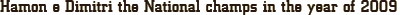

Haras Luanda is celebrating, thanks to the excellent performance of its stallions in the XXIX Campolina National Week, that happened from the 6th to the 13th days of september, 2009 at the Gameleira park in Belo Horizonte, MG.
Hamon da Hibipeba, the most important stallion for the haras nowadays, became two followed times the national Champion. This is because the Adult Horses Title was its second one conquered in the Gamaleira tracks, in 2009. In 2006, Hamon was the young colt Champion and the great reserved Young Champion for Campolina breed (and more: it got the title of Reserved Best Young Male Head and Reserved Mother’s Progeny, in the same year).
“Hamon was an excellent acquisition I made with my friends Claudemiro Santana, Demósthenes Carvalho, Edmundo Jones, Jorgge Libório e Oldemar Spínola, on 2006. It gave us many victories on the tracks and now we are very ablaze about breeding program.” Says Paulo Rocha, Haras Luanda owner.
His excitement has a reason. As Paulo says, Hamon da Hibipeba never left the tracks without titles and trophies. “Beyond championships of 2006 e 2009, in 2007 Hamon was the Reserved Junior Colt Champion and in 2008 was prevented from competing for lameness. But whenever it competed, it was awarded”.
Another reason for Paulo’s enormous satisfaction is the conquest of the Haras first national title. The first national Champion from Haras Luanda was a colt called Dimitri. It won brilliantly the Masters Colt category, and was the first in gait and morphology.
“Dimitri was born from an embryo acquired in an auction here in Bahia. It descended on Agitada das Duas Marias, designed by Hibipeba. Thanks God and our effort, the result of this breeding experience was wonderful, and this colt is Haras Luanda passion.” Says Paulo.
With these results, Haras Luanda ends the 2008/09 season with two national titles and with its most important stallions in the top 15 males of ABCCCampolina ranking.
“Hamon e Dimitri has the same bloodline, they’re the result of crossing Hibipeba disgn with great mares of Iluminado de Alfenas - Chana da Hibipeba and Agitada das Duas Marias. The expectation is that they work on breeding programs to project the Haras Luanda on higher levels”. Paulo celebrates.
{kind=link}
{kind=link}
Hamon da Hibipeba, the most important stallion for the haras nowadays, became two followed times the national Champion. This is because the Adult Horses Title was its second one conquered in the Gamaleira tracks, in 2009. In 2006, Hamon was the young colt Champion and the great reserved Young Champion for Campolina breed (and more: it got the title of Reserved Best Young Male Head and Reserved Mother’s Progeny, in the same year).
“Hamon was an excellent acquisition I made with my friends Claudemiro Santana, Demósthenes Carvalho, Edmundo Jones, Jorgge Libório e Oldemar Spínola, on 2006. It gave us many victories on the tracks and now we are very ablaze about breeding program.” Says Paulo Rocha, Haras Luanda owner.
His excitement has a reason. As Paulo says, Hamon da Hibipeba never left the tracks without titles and trophies. “Beyond championships of 2006 e 2009, in 2007 Hamon was the Reserved Junior Colt Champion and in 2008 was prevented from competing for lameness. But whenever it competed, it was awarded”.
Another reason for Paulo’s enormous satisfaction is the conquest of the Haras first national title. The first national Champion from Haras Luanda was a colt called Dimitri. It won brilliantly the Masters Colt category, and was the first in gait and morphology.
“Dimitri was born from an embryo acquired in an auction here in Bahia. It descended on Agitada das Duas Marias, designed by Hibipeba. Thanks God and our effort, the result of this breeding experience was wonderful, and this colt is Haras Luanda passion.” Says Paulo.
With these results, Haras Luanda ends the 2008/09 season with two national titles and with its most important stallions in the top 15 males of ABCCCampolina ranking.
“Hamon e Dimitri has the same bloodline, they’re the result of crossing Hibipeba disgn with great mares of Iluminado de Alfenas - Chana da Hibipeba and Agitada das Duas Marias. The expectation is that they work on breeding programs to project the Haras Luanda on higher levels”. Paulo celebrates.
| 1st Expo Brasileira: The Haras Luanda was the best breeder and exhibitor of North and Northeast of Brazil |
| XXX Campolina Horse Week 2010 |
© Copyright 2009 - Haras Luanda. All rights reserved.